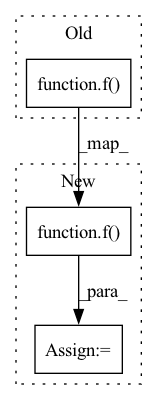

Pattern ID :17499

Before Change
outs = []
for f in self.discriminators:
outs += [f(x)]
return outs
After Change
outs = []
for f in self.discriminators:
outs = outs + [f(x)]
return outs
In pattern: SUPERPATTERN
Frequency: 3
Non-data size: 3
Instances
Fragment ID: 57989581
Project Name: digitalphonetics/ims-toucan
Commit Name: 0c62eba4c06d41f49d35a03b02044c322f6a5448
Time: 2021-10-07
Author: florian.lux@ims.uni-stuttgart.de
File Name: TrainingInterfaces/Spectrogram_to_Wave/HiFIGAN/HiFiGAN.py
M Class Name: HiFiGANMultiPeriodDiscriminator
N Class Name: HiFiGANMultiPeriodDiscriminator
M Method Name: forward(2)
N Method Name: forward(2)
M Parent Class: torch.nn.Module
N Parent Class: torch.nn.Module
M File Name: TrainingInterfaces/Spectrogram_to_Wave/HiFIGAN/HiFiGAN.py
N File Name: TrainingInterfaces/Spectrogram_to_Wave/HiFIGAN/HiFiGAN.py
M Start Line: 340
M End Line: 342
N Start Line: 340
N End Line: 342
'>
Before Change
v = np.random.rand(x.shape[0]) * self.max_value / self.dynamic_factor
v[2] *= self.dynamic_factor
f = interpolate.Rbf(x, y, v, function="gaussian")
bg = torch.clamp(torch.from_numpy(f(self.xn, self.yn).astype("float32")), 0.)
return input + bg.unsqueeze(0).unsqueeze(0).repeat(1, input.size(1), 1, 1)
After Change
// Setup interpolation function
f = interpolate.Rbf(x, y, v, function="gaussian")
// Interpolate, convert and clamp to 0
bg = f(self.xn, self.yn)
bg = torch.clamp(torch.from_numpy(bg.astype("float32")), 0.)
return input + bg.unsqueeze(0).unsqueeze(0).repeat(1, input.size(1), 1, 1)
'>
Fragment ID: 57989577
Project Name: turagalab/decode
Commit Name: 81181bc11e4f5a9a4215aeb1ce57e4ecde59727e
Time: 2019-09-12
Author: gitdev@LRM.photo
File Name: deepsmlm/generic/background.py
M Class Name: NonUniformBackground
N Class Name: NonUniformBackground
M Method Name: forward(2)
N Method Name: forward(2)
M Parent Class: Background
N Parent Class: Background
M File Name: deepsmlm/generic/background.py
N File Name: deepsmlm/generic/background.py
M Start Line: 95
M End Line: 95
N Start Line: 97
N End Line: 98
'>
Before Change
outs = []
for f in self.discriminators:
outs += [f(x)]
x = self.pooling(x)
return outs
After Change
outs = []
for f in self.discriminators:
outs = outs + [f(x)]
x = self.pooling(x)
return outs
'>
Fragment ID: 57989578
Project Name: digitalphonetics/ims-toucan
Commit Name: 0c62eba4c06d41f49d35a03b02044c322f6a5448
Time: 2021-10-07
Author: florian.lux@ims.uni-stuttgart.de
File Name: TrainingInterfaces/Spectrogram_to_Wave/HiFIGAN/HiFiGAN.py
M Class Name: HiFiGANMultiScaleDiscriminator
N Class Name: HiFiGANMultiScaleDiscriminator
M Method Name: forward(2)
N Method Name: forward(2)
M Parent Class: torch.nn.Module
N Parent Class: torch.nn.Module
M File Name: TrainingInterfaces/Spectrogram_to_Wave/HiFIGAN/HiFiGAN.py
N File Name: TrainingInterfaces/Spectrogram_to_Wave/HiFIGAN/HiFiGAN.py
M Start Line: 547
M End Line: 549
N Start Line: 547
N End Line: 549